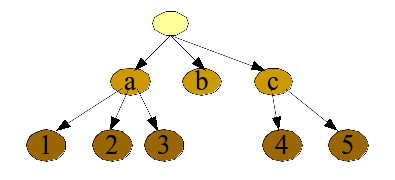

sprint=object.gui
task=t3
It is time to discuss the basics of graphical user interfaces.
As you known, a graphical user interface is about a composition
of widgets such as buttons, labels, text area with scrollbars, etc.
So within a window, a tree of widgets is layed out over the pixel
area of the screen where the window is displayed.
This task is about learning how this works.
Il est temps de discuter des bases des interfaces graphiques.
Comme vous le savez, une interface graphique est une composition
d'éléments, appelés widgets, tels que des boutons,
des labels, ou encore des zones de texte. Ainsi, dans une fenêtre,
il y a un arbre de widgets qui est disposé graphiquement sur
la surface de la fenêtre. Cette tâche explique comme cela
est fait.
So, a graphical interface is a tree of widgets that are layed out
within a window, look at the example below. On the left-hand side,
you see the tree of widgets. On the right-hand side, you see the
corresponding layout in the window, each widget owning a rectangle
of pixels.
Donc une interface graphique est un arbre d'éléments graphiques
qui sont disposés au sein d'une fenêtre, voici un exemple:
|

|

|
Notice the corresponding colors, letters, and numbers
that tell you how the tree of widgets on the left-hand side
is layed out on the right-hand side. Notice these different
points:
Notez la correspondance entre couleurs, lettres, et chiffres,
c'est elle qui vous permet de comprendre comment les éléments
de l'arbre sont disposés dans la fenêtre. Notez les points
suivants:
-
Notice the root of the tree corresponds to the entire window,
represented using the lighter yellow color on the right-hand side
of the figure.
Notez que la racine de l'arbre s'étends sur toute la surface
de la fenêtre.
-
Notice that children nodes in the
tree are always layed out on top of their parent node.
Look on the right-hand side of the figure and notice
how darker surfaces are painted above lighter ones.
Now, notice the corresponding colors in the tree, with
children having a darker color than their parent.
Notez que les noeuds enfants sont toujours disposés au dessus
de la surface de leur noeud parent.
-
Also notice that children nodes are layout within the bounds
of their parent node. For instance, notice that the nodes
4 and 5 are layed out within the bounds of their parent, the node
c, itself layed out within the bounds of its parent, the root node.
Notez aussi que les surfaces attribuées aux noeuds enfants sont
incluses dans la surface attribuée à leur parent.
To represent the tree and its graphical layout on the screen,
we will use the two following classes:
Pour représenter l'arbre des éléments, nous allons utiliser
ces deux classes:
public class Component{
Container parent;
int x, y ; // top-left corner location within the parent
int width, height ; // dimension within the parent
}
public class Container extends Component {
Component children[]; // children of this container
}
A leaf in the tree is represented by an instance of the
class Component while a
node in the tree is represented by an instance of the
class Container.
Do not confuse the layout tree and the inheritance tree.
The layout tree is an object graph representing how
components are layed out on the screen. The inheritance tree
is the fact that the class Container
inherits from the
class Component.
Une feuille de l'arbre est représentée par une instance
de la classe
Component alors
qu'un noeud de l'arbre est représenté par une instance
de la classe
Container.
Ne confondez pas l'arbre qui est un graphe d'objets
représentant l'organisation des éléments graphiques
et l'arbre des classes avec la classe
Container
qui hérite de la classe
Component.
Steps
That's if folks. Please do commit your work.